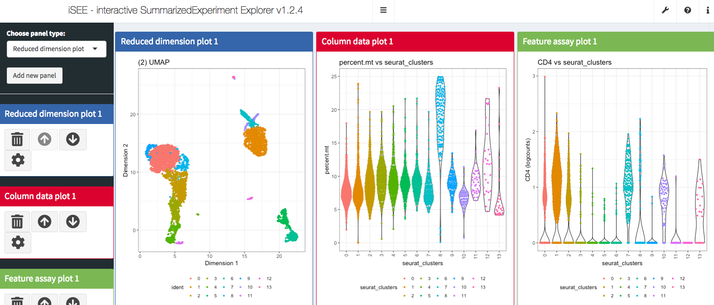

Last updated: 2019-08-08
Checks: 7 0
Knit directory: scRNA-seq-workshop-Fall-2019/
This reproducible R Markdown analysis was created with workflowr (version 1.4.0). The Checks tab describes the reproducibility checks that were applied when the results were created. The Past versions tab lists the development history.
Great! Since the R Markdown file has been committed to the Git repository, you know the exact version of the code that produced these results.
Great job! The global environment was empty. Objects defined in the global environment can affect the analysis in your R Markdown file in unknown ways. For reproduciblity it’s best to always run the code in an empty environment.
The command set.seed(20190718) was run prior to running the code in the R Markdown file. Setting a seed ensures that any results that rely on randomness, e.g. subsampling or permutations, are reproducible.
Great job! Recording the operating system, R version, and package versions is critical for reproducibility.
Nice! There were no cached chunks for this analysis, so you can be confident that you successfully produced the results during this run.
Great job! Using relative paths to the files within your workflowr project makes it easier to run your code on other machines.
Great! You are using Git for version control. Tracking code development and connecting the code version to the results is critical for reproducibility. The version displayed above was the version of the Git repository at the time these results were generated.
Note that you need to be careful to ensure that all relevant files for the analysis have been committed to Git prior to generating the results (you can use wflow_publish or wflow_git_commit). workflowr only checks the R Markdown file, but you know if there are other scripts or data files that it depends on. Below is the status of the Git repository when the results were generated:
Ignored files:
Ignored: .DS_Store
Ignored: .Rhistory
Ignored: .Rproj.user/
Untracked files:
Untracked: data/pbmc10k/
Untracked: data/pbmc5k/
Untracked: docs/assets/
Note that any generated files, e.g. HTML, png, CSS, etc., are not included in this status report because it is ok for generated content to have uncommitted changes.
These are the previous versions of the R Markdown and HTML files. If you’ve configured a remote Git repository (see ?wflow_git_remote), click on the hyperlinks in the table below to view them.
| File | Version | Author | Date | Message |
|---|---|---|---|---|
| Rmd | feb2ce0 | Ming Tang | 2019-08-08 | wflow_publish(c(“analysis/scRNAseq_workshop_0.Rmd”, “analysis/scRNAseq_workshop_3.Rmd”, |
| html | ce10b9a | Ming Tang | 2019-08-08 | Build site. |
| Rmd | 0cf484c | Ming Tang | 2019-08-08 | wflow_publish(c(“analysis/scRNAseq_workshop_0.Rmd”, “analysis/scRNAseq_workshop_1.Rmd”, |
| html | b27f0e8 | Ming Tang | 2019-07-30 | Build site. |
| html | 87b80b5 | Ming Tang | 2019-07-30 | Build site. |
| Rmd | acb3717 | Ming Tang | 2019-07-30 | wflow_publish(c(“analysis/scRNAseq_workshop_4.Rmd”)) |
| html | 4183cd5 | Ming Tang | 2019-07-29 | Build site. |
| html | 03df779 | Ming Tang | 2019-07-29 | Build site. |
We primary used Seurat package to work with the single-cell data. However, there are a lot of other cool bioconductor packages to work with single-cell data as well. In this section, I will introduce you to iSEE package which provides cool interactive visulization for the single-cell data sets. In fact, there are a suite of packages that work with single-cell data in the bioconductor ecosystem. Please read https://osca.bioconductor.org/ if you are interested.
iSEE is a bioconductor package and it works with the SingleCellExperiment object not the Seurat object. Let’s convert it first.
More converion examples can be found https://satijalab.org/seurat/v3.0/conversion_vignette.html
library(Seurat)
library(iSEE)
#read in the 5k pmbc data we created before
pbmc<- readRDS("data/pbmc5k/pbmc_5k_v3.rds")
# Seurat object
pbmcAn object of class Seurat
18791 features across 4595 samples within 1 assay
Active assay: RNA (18791 features)
3 dimensional reductions calculated: pca, umap, tsnepbmc.sce <- as.SingleCellExperiment(pbmc)
# SingleCellExperiment object
pbmc.sceclass: SingleCellExperiment
dim: 18791 4595
metadata(0):
assays(2): counts logcounts
rownames(18791): AL627309.1 AL627309.3 ... AL354822.1 AC240274.1
rowData names(5): vst.mean vst.variance vst.variance.expected
vst.variance.standardized vst.variable
colnames(4595): AAACCCAAGCGTATGG AAACCCAGTCCTACAA ...
TTTGTTGTCCTTGGAA TTTGTTGTCGCACGAC
colData names(7): orig.ident nCount_RNA ... seurat_clusters ident
reducedDimNames(3): PCA UMAP TSNE
spikeNames(0):## feed to iSEE
iSEE(pbmc.sce)It opens the Shiny Application and now we are ready to do some interactive exploration of the data set!

sessionInfo()R version 3.5.1 (2018-07-02)
Platform: x86_64-apple-darwin15.6.0 (64-bit)
Running under: macOS High Sierra 10.13.6
Matrix products: default
BLAS: /Library/Frameworks/R.framework/Versions/3.5/Resources/lib/libRblas.0.dylib
LAPACK: /Library/Frameworks/R.framework/Versions/3.5/Resources/lib/libRlapack.dylib
locale:
[1] en_US.UTF-8/en_US.UTF-8/en_US.UTF-8/C/en_US.UTF-8/en_US.UTF-8
attached base packages:
[1] parallel stats4 stats graphics grDevices utils datasets
[8] methods base
other attached packages:
[1] iSEE_1.2.4 SingleCellExperiment_1.4.0
[3] SummarizedExperiment_1.12.0 DelayedArray_0.8.0
[5] BiocParallel_1.16.2 matrixStats_0.54.0
[7] Biobase_2.42.0 GenomicRanges_1.34.0
[9] GenomeInfoDb_1.18.1 IRanges_2.16.0
[11] S4Vectors_0.20.1 BiocGenerics_0.28.0
[13] Seurat_3.0.2
loaded via a namespace (and not attached):
[1] Rtsne_0.15 colorspace_1.4-1 ggridges_0.5.1
[4] rprojroot_1.3-2 XVector_0.22.0 fs_1.2.6
[7] listenv_0.7.0 npsurv_0.4-0 DT_0.5
[10] bit64_0.9-7 ggrepel_0.8.0 AnnotationDbi_1.44.0
[13] codetools_0.2-16 splines_3.5.1 R.methodsS3_1.7.1
[16] lsei_1.2-0 knitr_1.21 jsonlite_1.6
[19] workflowr_1.4.0 ica_1.0-2 cluster_2.0.7-1
[22] png_0.1-7 R.oo_1.22.0 shinydashboard_0.7.1
[25] shiny_1.2.0 sctransform_0.2.0 rentrez_1.2.2
[28] compiler_3.5.1 httr_1.4.0 backports_1.1.3
[31] assertthat_0.2.0 Matrix_1.2-15 lazyeval_0.2.1
[34] later_0.7.5 htmltools_0.3.6 tools_3.5.1
[37] rsvd_1.0.0 igraph_1.2.2 gtable_0.2.0
[40] glue_1.3.0 GenomeInfoDbData_1.2.0 RANN_2.6
[43] reshape2_1.4.3 dplyr_0.8.0.1 Rcpp_1.0.0
[46] gdata_2.18.0 ape_5.2 nlme_3.1-137
[49] rintrojs_0.2.2 gbRd_0.4-11 lmtest_0.9-36
[52] xfun_0.4 stringr_1.3.1 globals_0.12.4
[55] mime_0.6 miniUI_0.1.1.1 irlba_2.3.2
[58] gtools_3.8.1 XML_3.98-1.16 shinyAce_0.4.0
[61] future_1.10.0 MASS_7.3-51.1 zlibbioc_1.28.0
[64] zoo_1.8-4 scales_1.0.0 colourpicker_1.0
[67] promises_1.0.1 RColorBrewer_1.1-2 yaml_2.2.0
[70] memoise_1.1.0 reticulate_1.10 pbapply_1.3-4
[73] gridExtra_2.3 ggplot2_3.1.0 RSQLite_2.1.1
[76] stringi_1.2.4 caTools_1.17.1.1 bibtex_0.4.2
[79] Rdpack_0.10-1 SDMTools_1.1-221 rlang_0.3.1
[82] pkgconfig_2.0.2 bitops_1.0-6 evaluate_0.12
[85] lattice_0.20-38 ROCR_1.0-7 purrr_0.2.5
[88] htmlwidgets_1.3 bit_1.1-14 cowplot_0.9.3
[91] tidyselect_0.2.5 plyr_1.8.4 magrittr_1.5
[94] R6_2.3.0 gplots_3.0.1 DBI_1.0.0
[97] mgcv_1.8-26 pillar_1.3.1 whisker_0.3-2
[100] fitdistrplus_1.0-11 survival_2.43-3 RCurl_1.95-4.11
[103] tibble_2.0.1 future.apply_1.0.1 tsne_0.1-3
[106] crayon_1.3.4 KernSmooth_2.23-15 plotly_4.8.0
[109] rmarkdown_1.11 grid_3.5.1 data.table_1.11.8
[112] blob_1.1.1 git2r_0.23.0 metap_1.0
[115] digest_0.6.18 xtable_1.8-3 httpuv_1.4.5.1
[118] tidyr_0.8.2 R.utils_2.7.0 munsell_0.5.0
[121] viridisLite_0.3.0 vipor_0.4.5 shinyjs_1.0